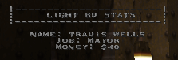
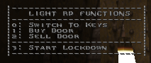
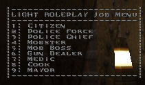

Light RolePlay
-Info-
LightRP is a basic roleplay extension for Quake and QuakeWorld, which aims to be easily customizable
for server admins and players. Included are a range of jobs and tools to help you roleplay
in this gamemode inspired by DarkRP.
You get paid every 160 seconds with a salary matching your job.
You can own and disown doors to make property become yours. You can lock these aswell.
-Jobs-
(Name, Weapons, Description)
+ Citizen
Default; is the default class in which you spawn!
+ Police Force
Shotgun; Ability to arrest citizens.
+ Mobster
Default; Some Underground scum.
+ Gun Dealer
Default; Sells weapons to people.
+ Medic
Medkit; Heals people against money.
+ Merchant
Default; Sells food to people which heals them.
+ Mayor
Default; Controls all the city, does lockdowns.
Only one player!
Default weapons: Keys, Axe
Everyone has got the default weapons. An Axe is always great for self defense.
-Controls-
F1: Displays Statistics

F2: Function Menu

F3: Job Selection Menu

To navigate, press the numeric keys on your keyboard.
-Rules-
- No random killing aka No Random Deathmatch (RDM). This gets you kicked from most servers.
- Don't carry guns in public or cops will arrest you. Doesn't count for cops obviously.
- You are not allowed to arrest people for no reason.
-FAQ-
Q:
Can I modify your code to create my own version of LightRP for my server?A: Yes, this mod was created with that in mind. Feel free to modify it as much as you'd like.
Q:
How much of the standard Quake code has been modified?A: Very, very little. Only added calls that hack-in RP related functions. You got all the RP related magic in seperate QC files.
Q:
Can I use this to make a standalone version on the PSP? Because this would be super cool and edgy.A: No.
Q:
Why did you do this?A: Because this wasn't done before and it seemed like a cool idea!
-Editing-
-Credits-
- eukara - Coding, Documentation
- Rick Darkaliono - Original creator of LightRP
- Rickster - DarkRP Creator